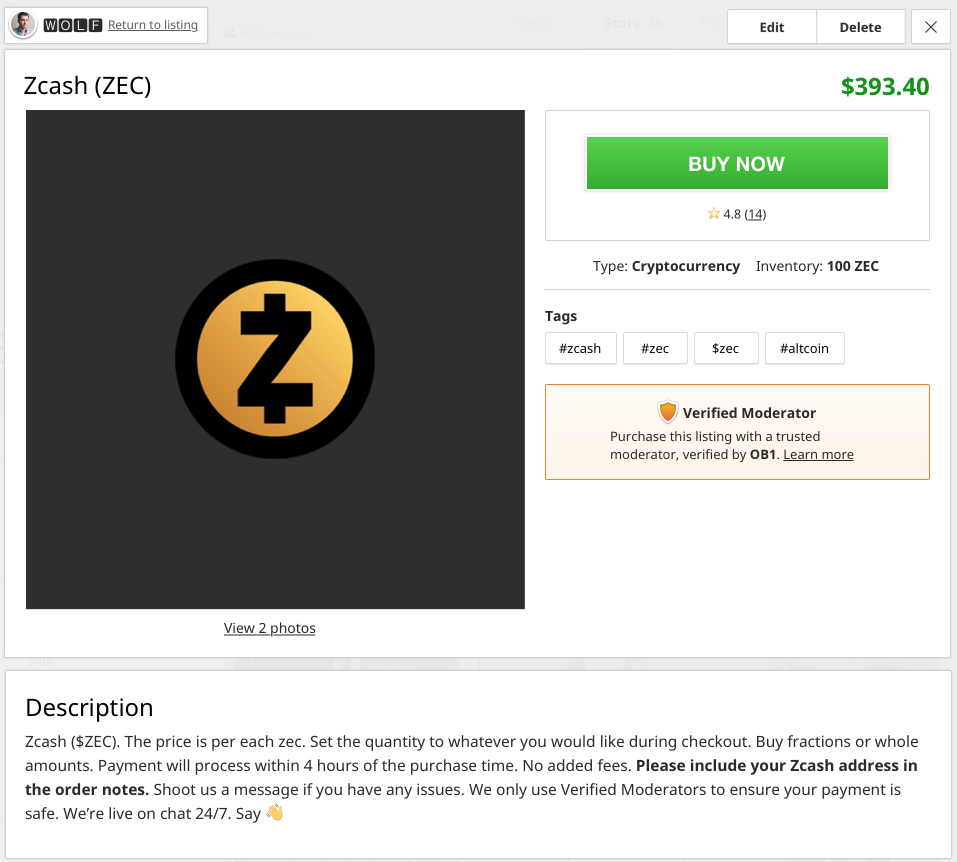
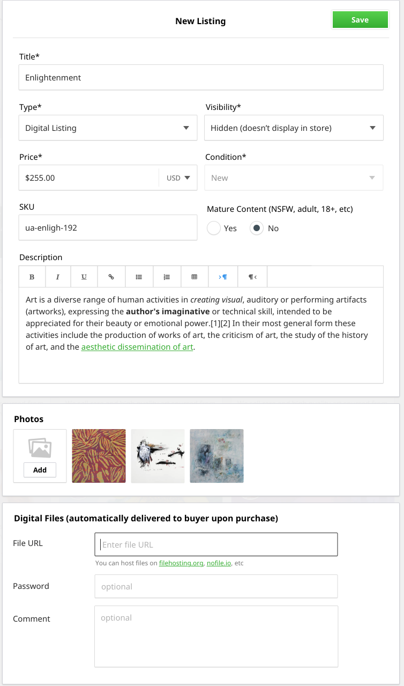
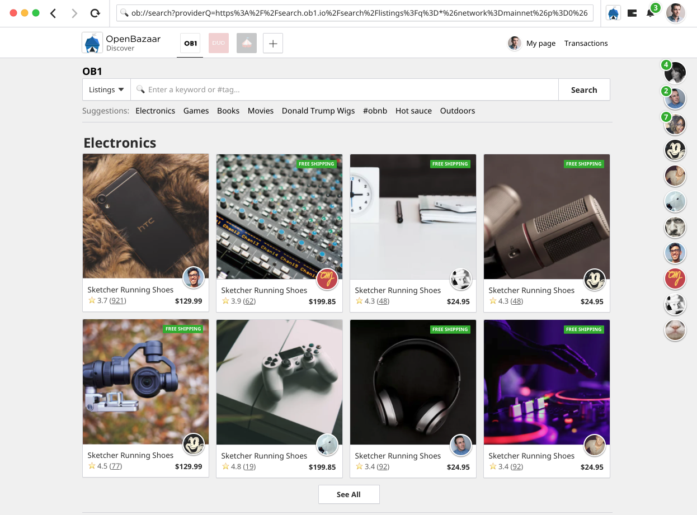

It’s been a while since we updated the roadmap for OpenBazaar development. The previous roadmap essentially stated: “Get 2.0 finished!” We did that last November, and since then we’ve also released one major update (2.1.1) which allowed people to use Bitcoin Cash and Zcash in addition to Bitcoin. Several smaller but important features have been added as well, including verified moderators, to help stop scammers.
The company driving development – OB1 – also raised a series A round of funding. Now that the development team has released 2.0 and has resources to continue building, we’re putting out a roadmap to explain where we think OpenBazaar should go next.
As always, this is open source and OpenBazaar is nothing more than a collection of people around the world running this free software. We want input from the community on what you think of this roadmap, and we want your help in achieving these goals as well. More details about how you can give feedback or contribute are at the end of the post.
New Platforms
OpenBazaar has always been a desktop-only experience. Building distributed applications is very difficult to do in a browser and on mobile devices, and it was important to get the protocol right first before we even began working on alternative clients.
Our mission has always been to make trade free. No cost to engage in trade, and no restrictions on trade either. To do this we try to make the barriers to entry of the application as low as possible. On desktop, the installation process and store setup are quite simple – but not everyone has a modern computer, and not everyone is able to download, install, and run whatever applications they want.
Being able to run OpenBazaar in a browser and on a smartphone is essential to further reduce the barriers to entry into the network. These new clients are going to be the primary areas we focus on over the next year.
Mobile
Our mobile journey initially positioned OB1 offering a hosted node service that the iOS and Android clients would connect to. While convenient for the user, it would require OB1 controlling infrastructure and acting as a gatekeeper for the decentralised marketplace for mobile users.
Instead, we approached the Go community in Q3 2017 for assistance in modifying the OpenBazaar server (written in Go) for mobile devices. This strategy was successful, and after some optimisation we are proud to report that the OpenBazaar mobile applications, which OB1 will release, will run a full OpenBazaar node on the device. The significance of this achievement cannot be understated as this enables billions of mobile devices to access a decentralised marketplace as a full node on the OpenBazaar network.
At the time we achieved this milestone and were positioned to release the app, Bitcoin transaction fees escalated to the point where trade was only viable for expensive transactions. We decided we needed to integrate other cryptocurrencies, as we further explain in this video.
While the OpenBazaar server now supports other cryptocurrencies such as Zcash and Bitcoin Cash, it does so in an exclusive manner, and a user cannot buy or sell in multiple currencies at the same time. To support this, the OpenBazaar wallet required a significant refactor that is still ongoing.
The end result will be an iOS and Android mobile app that will run a full OpenBazaar node that can transact in Bitcoin, Litecoin, Bitcoin Cash, and Zcash as a start. This will truly empower people all of the world to start earning and using cryptocurrencies in a global decentralised marketplace with zero fees.
Looking for a lightly used Aventador on @openbazaar with this Android phone... pic.twitter.com/c7pk5WSGBZ
— Brian Hoffman (@brianchoffman) March 17, 2018
Web
Running OpenBazaar in a browser is more difficult. The network is built on top of IPFS. Running an OpenBazaar node is essentially running a custom IPFS node. There is an effort underway to have an IPFS node run in browser called IPFS-JS, and we believe this will allow us to build a web-based OpenBazaar version. Building the web-based version is a significant task, and we believe it will take us into early 2019.
We expect the payoff to be worth the wait. The initial web-based client will allow buyers to make purchases without needing to download anything. Users can share links to stores or listings that will be viewable from the web. These improvements won’t compromise the completely distributed architecture of the network; all the necessary code is run client-side in the browser.
Developer support
Software development can be messy, especially in an innovative space where things change quickly. We made our own 1.0 version of OpenBazaar obsolete with 2.0 in only a year and a half. In order to get 2.0 out the door we didn’t focus much effort on supporting external developers, and as a result the project isn’t nearly as approachable to new contributors as we’d like. To fix this we’re now taking a few steps to make the project more friendly to external contributors:
- Improving documentation for existing repositories
- Organizing / supporting software other than the main client / server repositories
- Formalizing the protocol separately from the reference implementation
- Offering bounties for bugs or new features / apps on top of OpenBazaar
Token
Content discovery in a completely decentralized network can be difficult. Custom curation is a new feature we’ll be adding (see “Improved Content Discovery” below), but it’s not immediately clear why a user would take the time to offer curation services. It’s also unclear how a vendor advertises their listings in a network that nobody controls.
In order to create incentives for curators, and to give vendors the ability to advertise, we’re introducing the OpenBazaar Token.
The token whitepaper draft is complete and will be published in the near future.
You can read more about the token and sign up to receive updates as well.
New features
New clients and the new token infrastructure are huge improvements for the ecosystem and will take a substantial part of development effort, but that’s not all we’re going to be doing this year. There are plenty of new features we want to add into the software as well.
Cryptocurrency listings
OpenBazaar has always had three listing types available: physical goods, digital goods, and services. We’re now adding a fourth: cryptocurrency. Users will now be able to buy and sell cryptocurrencies directly with each other on the platform. No fees, no need to register with any service, and no threat of an exchange getting hacked.
You can walk through a prototype of this feature here. We’re building this right now and it should be included in the next OpenBazaar release.

Requests
Cryptocurrencies aren’t the only new listing type we’ll be introducing. We’ll also be adding requests, allowing buyers to make offers to purchase something if someone provides it to them.
The marketplace is currently one-sided with only vendors telling buyers what they have available. But with the requests feature it now becomes two-sided. Buyers tell vendors what they want, and then vendors can compete with each other to fulfil the open orders.
This feature will change OpenBazaar from a platform where content is solely dictated by vendors to one where vendors and buyers both have the ability to change what is being offered. This listing type won’t be limited to physical goods either; users will be able to request digital goods, services, and cryptocurrencies as well.
Automated digital downloads
Digital goods are a great use case for cryptocurrency, but the current method of fulfilling orders placed for digital goods requires manual effort from the vendor. This new feature will automate the process so that it’s as simple as “send money, get file.”

Improved Content Discovery
Having search providers directly in the application has been a huge improvement for product discovery over the old 1.0 version, but users still don’t have a good way to browse listings, or to curate groups of listings themselves.
We’ll be adding a feature that allows buyers to browse groups of listings that have been curated by other users on the network. These curated lists can be anything – goods sold only in a specific location, a niche style, goods based on popularity, the curator will be able to choose content lists based on any criteria they choose.

Browsing experience in OpenBazaar. Designs may change.
Better Reputation & Identity
Currently buyers in OpenBazaar can leave reviews on transactions and those reviews are aggregated to show the vendor’s reputation. This is the only reputation metric we have in place, and we want to expand this moving forward. Decentralized reputation and identity is an incredibly difficult problem to solve, and there are no clear solutions that exist, but we know of a few ways to improve.
One improvement is the addition of handles. This was a feature in the 1.0 version that hasn’t made it into 2.0 yet, the ability to tie your OpenBazaar ID (which is currently a random string of characters) into a human-readable name. For example, the store run by the development team has the following ID:
ob://QmcUDmZK8PsPYWw5FRHKNZFjszm2K6e68BQSTpnJYUsML7/store
This isn’t possible to memorize, but with the handles feature users could just type in a name such as “@OpenBazaar” to visit the store. It can also use DNS to resolve names.
Handles may also allow users to tie into existing identity systems, such as Blockstack. If the user has tied other accounts into the identity system, then this acts as a way to bootstrap reputation and increase trust among users.
Development of better reputation / identity hasn’t begun yet, so we welcome ideas and assistance in building this feature.
OpenBazaar Foundation
OpenBazaar has always been – and will always be – open source and free to use. The company OB1 has been the primary development team for most of OpenBazaar’s history, and have chosen not to directly monetize the protocol, but will be offering services to users on the network instead.
The ensure the protocol will be maintained in the long-run, and to allow community members to play a larger role in guiding the development and maintenance of the protocol, network, and reference implementations, we’re considering the creation of an OpenBazaar Foundation.
The specific mission of the organization is being decided now, but the overall goal would be to ensure that there always exists a place online where people can engage in free, private, permissionless trade.
This new nonprofit would lead a transition away from OB1 being the primary maintainers of the protocol towards a community model of management.
The foundation creation process has only just begun, so if you have input or wish to help in the process, please let us know.
What do you think?
Love our roadmap? Think we’ve gotten something wrong, or missed an opportunity? We want to hear from you.
We hosted a community all on April 26, 2018 and you can check out the recording of that below if you’d like, but we would REALLY love for you to join us on Slack to continue the conversation and give us your thoughts as we continue to set priorities together!
Do you want to help build this with us?
Download OpenBazaar right now to get buying or selling in minutes or join us on Github to contribute to the development of this open-source project!
Recent updates
Valuing Privacy & still Getting Data from a Decentralized Network
Facebook knows exactly how many users are on their platform. Amazon knows exactly how many products are sold. Instagram knows exactly how many photos are shared.
What Do Moderators & Moderated Payments Do on OpenBazaar?
Decentralizing ecommerce is an important part of the future we believe in. We are working to build a world with greater access to global commerce and more opportunities for people everywhere to build the lives they want. We believe this...
Cryptocurrency Trading Now Available on OpenBazaar
OpenBazaar version 2.2.0 was released today. For the full list of new features and improvements in this release, check out the release notes at the end of the post.